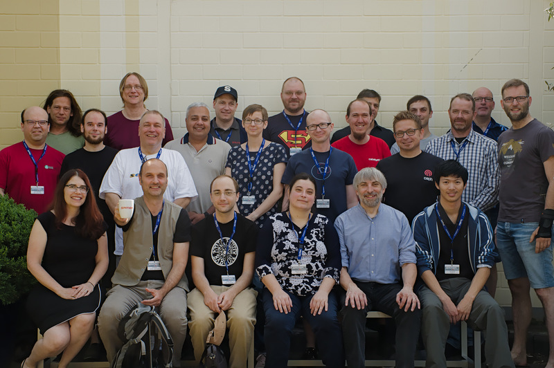

The Samba Team
The Samba Team is a loose-knit group of about 40 people from all over the world who contribute regularly to Samba and have direct write access to the Samba Git repository. The number of people actively doing Git checkins is approximately 10 - 15 people. Of course, there is always room to help.
Here is a photo of some of us at the sambaXP conference for users and developers in June 2019:
